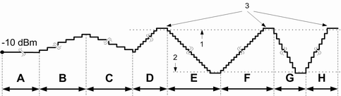

The conformance test specification 3GPP TS 34.121, section 5.4.2 "Inner Loop Power Control" defines the TPC test steps A to H inducing a power ramp of the following shape:

Most of these test steps can be selected as TPC setup. These TPC setups result in the measurement mode "Inner Loop Power Control".
The following table provides an overview of the test steps, the transferred bit patterns and the expected reaction of the UE, i.e. of the expected UE power steps. The algorithm and step size to be configured is also listed, for an explanation see "Algorithm and step size".
TPC setup name | Transferred pattern | Algorithm / step size | Expected power steps |
|---|---|---|---|
TPC test step ABC | A: 60-bit 3GPP pattern B: 50 x 1 C: 50 x 0 | 2 / 1 dB | A: 60 x 0 dB B: (4 x 0 dB, 1 x +1 dB) x 10 C: (4 x 0 dB, 1 x -1 dB) x 10 |
TPC test step E | m x 0 | 1 / 1 dB | -1 dB until min power, then 0 dB |
TPC test step F | n x 1 | 1 / 1 dB | +1 dB until max power, then 0 dB |
TPC test step GH | G: p x 0 H: q x 1 | 1 / 2 dB | G: -2 dB until min power, then 0 dB H: +2 dB until max power, then 0 dB |
m, n, p and q are configurable. 3GPP requests "at least 10 more than the number required to ensure that the UE reaches the relevant maximum or minimum power threshold". The additional setup "TPC Test Step EF" equals "TPC Test Step E" followed by "TPC Test Step F". | |||
When the TPC measurement for inner loop power control pattern ABC, EF, GH is started in combined signal path, the UE measurement reporting is disabled automatically.
When the UE receives TPC bits, it has to adjust its transmit power depending on the configured algorithm and step size as defined in 3GPP TS 25.214.
- Algorithm 1:
The UE receives one TPC bit per timeslot. If the received TPC bit equals 1 (0), then the power control parameter TPC_cmd for that timeslot is +1 (-1). It implies that the UE output power changes after each timeslot. - Algorithm 2:
The UE receives one TPC bit per timeslot. The slots are grouped into sets of 5 slots, aligned to the frame boundaries, so that there is no overlap between different sets of 5 slots.
If the received TPC bit equals 1 (0) in all 5 slots of a set, then the power control parameter TPC_cmd for the 5th slot is +1 (-1). Otherwise the TPC_cmd for the 5th slot is 0. It implies that the UE transmitter output power always remains constant for 4 slots and can change for the 5th slot.
For both algorithms, the UE output power changes by TPC_cmd multiplied with the TPC step size of 1 dB or 2 dB.
To improve the accuracy of the measured power step values, it is possible to split the TPC patterns for test steps E, F, G, and H into segments.
Segmentation means that inverse TPC commands are inserted into each of the four test step patterns: A …1111…1111… pattern changes to …11011…11011…, a …0000…0000… pattern changes to …00100…00100…
The positions of the inverse TPC commands (segment borders) are fixed and known both by the signaling application and by the TPC measurement. The measurement uses the inverse TPC periods to adjust the instrument hardware to the next input power range. The two UE power steps before and after each segment border are assumed to be equal. A difference in the measured UE power steps is attributed to the changed hardware settings and subtracted off:
- For the falling TPC patterns (E, G), the power steps after the segment borders are corrected.
- For the rising TPC patterns (F, H), the power steps before the segment borders are corrected.
Therefore, the correction in the segment near the maximum UE output power is zero. The segment near the minimum UE output power contains the sum of all corrections in the test step.
Unsegmented TPC test patterns correspond to the unmodified patterns described in 3GPP TS 34.121. However, segmented test patterns still comply with 3GPP specifications. Use segmented TPC test patterns to measure all power steps with maximum accuracy. Note that the corrections can add up to a systematic error of the measured absolute powers, especially in the segments near the minimum UE output power.
If the UE power steps are systematically above or below the specified values, the UE power towards the end of a test step can get outside the linear analyzer range. It causes, that the TPC measurement generates an overflow or underflow message. It can be due to the fixed segment borders and the correction method. It does not necessarily mean that any of the single UE power steps are out of their specified range.
For a detailed example of an "Inner Loop Power Control" measurement comprising step A to step H, refer to the "Application Sheets" section of the signaling application chapter.